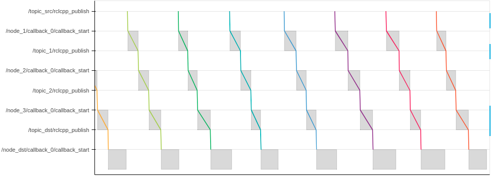
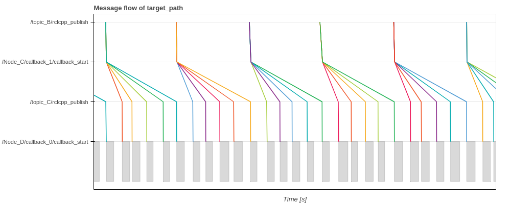
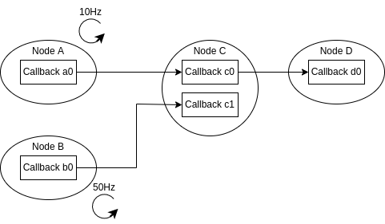

FAQ#
Installation#
Setup fails#
- In case you encounter errors during setup or build process, please make sure to use an appropriate branch for your environment
- ROS 2 Galactic, Ubuntu 20.04:
galacticbranch - ROS 2 Humble, Ubuntu 22.04: main branch
- ROS 2 Galactic, Ubuntu 20.04:
- It's also important to delete
./build./installand./srcdirectory before rebuilding CARET if you have built CARET using wrong settings
CLI tool doesn't work#
In case CLI tool execution fails, please make sure to perform CARET environment settings
source /opt/ros/humble/setup.bash
source ~/ros2_caret_ws/install/local_setup.bash
ros2 caret check_caret_rclcpp --workspace <path-to-workspace>
Warning
CARET CLI tool doesn't work properly in Anaconda environment. Please use pure Python.
Recording#
LTTng session doesn't start after ros2 caret record#
- Check detailed status for recording sequence by adding
-verboseoption (e.g.ros2 caret record -v)- You will see
N/M process started recording, whereNis the number of processes which have been started recording andMis the number of total processes to be started recording
- You will see
- If
Nincreases very slowly, add--recording-frequencyoption with integer greater than 100 (e.g.ros2 caret record -f 500)- Please be careful that it increases the possibility of recording failure
- If
Nremains 0, remove~/.lttngand start recording again- Please be careful that the first recorded trace data after removing
~/.lttngtends to lack some events. So, please ignore the data
- Please be careful that the first recorded trace data after removing
- It's also important to make sure you don't have another LTTng session running
So many nodes named /caret_trace_ooooooo created#
- As described in design section, a node to store CARET events is created for each process. Therefore, if a target application is huge and has a lot of processes, the number of CARET nodes also becomes huge
Visualization#
Result (plot, message_flow, etc.) is not outputted, or there seems something wrong with the result#
- Please use the following commands for verification
ros2 caret check_caret_rclcppto check if a target application is built with CARET/rclcppros2 caret check_ctfto check if tracing data is recorded properly
- Please make sure the followings:
- A target application is built with CARET/rclcpp
- CARET environment is set properly before running a target application
export LD_PRELOAD=$(readlink -f ~/ros2_caret_ws/install/caret_trace/lib/libcaret.so)source ~/ros2_caret_ws/install/local_setup.bash
- LTTng trace is started before running a target application
ros2 trace -s e2e_sample -k -u "ros2*"- or consider to use launch file
- Trace data is not discarded
- In case trace data is discarded, use Trace filter
- The size of trace data is proper
- If the size of trace data is extremely small (e.g. only few KByte) and a target application has lots of nodes, the maximum number of file descriptors may not be enough. It can be increased by
ulimit -n 65536
- If the size of trace data is extremely small (e.g. only few KByte) and a target application has lots of nodes, the maximum number of file descriptors may not be enough. It can be increased by
- See Recording for more details
Parts of results are not outputted#
- If certain nodes are not traced but some nodes are traced, some packages may be built without CARET/rclcpp. Please make sure
<depend>rclcpp</depend>is described inpackage.xml - Another possibility is that some nodes can't be analyzed due to CARET's limitations:
- CARET cannot analyze a node which has two or more timer callbacks with the same period time setting
- CARET cannot analyze a node which has two or more subscription callbacks with the same topic name
- Callback information in such nodes are not outputted. Also, message flow will be discontinued at such nodes
TraceResultAnalyzeError: Failed to find error occurs#
- The error occurs if information in an architecture file and trace data are inconsistent with each other
- Please modify the architecture file or check recording process
- e.g.
TraceResultAnalyzeError: Failed to find callback_object.node_name: /localization/pose_twist_fusion_filter/ekf_localizer, callback_name: timer_callback_0, period_ns: 19999999, symbol: void (EKFLocalizer::?)()
Visualization (callback)#
Callback frequency is smaller than expected value#
Plot.create_callback_frequency_plotcalculates frequency from one second to one second. It counts how many times a callback function is called for a second, and just uses the count as frequency. Therefore, the frequency on the last term tends to small because the last term is usually shorter than one second- Another possibility is that the frequency of a subscription callback will be small if it receives topics not periodically but infrequently. Also, the frequency of a timer callback will be small if the timer dynamically stops/starts
Callback latency is bigger than expected value#
- Some nodes may run initialization process. In this case, the latency time calculated by
Plot.create_callback_latency_plotis huge on the first execution
Visualization (message flow)#
Message flow is discontinued#
- If parts of nodes/communications don't run at all during recording, message flow stops on the way and such nodes/communications are not displayed on y-axis
- Please make sure that all nodes/communications in a target path run during recording, or modify a target path to analyze actually working path
- Another possibility is that a target path includes a node which CARET cannot analyze due to its limitations as explained above
What is a gray color rectangle in a message flow diagram?#
- A rectangle in a message flow diagram indicates a period from the entry to the exit of a callback function, while a line shows a flow of topics
- Note: a rectangle is not always illustrated

Huge delay between topic publication and callback start#
- In a message flow diagram, elapsed time from
ooo/rclcpp_publishtoooo/callback_startmeans latency from when a topic is published to when the following callback starts - It includes the following time:
- Communication (topic) latency
- Wait by ROS scheduler
- Wait by OS scheduler
- In most cases, it doesn't take so much time. In case the time is huge, the followings are possible causes:
- There is a problem in communication
- An executor cannot wake up because other processes occupy CPU
- A callback cannot wake up because other callbacks in the same callback group occupy the executor
- Processing time of a callback is longer than topic subscription period
Message flow looks split#
- Take the following system for example;
Node_Cpublishes a topic when it receives a topic fromNode_ANode_Apublishes a topic with a rate of 50 Hz, whileNode_Bpublishes a topic at 10 Hz
- Message flow (
Node_B->Node_C->Node_D) looks split atNode_C. It's becauseNode_Cpublishes 5 topics while receiving 1 topic fromNode_B - Note: A similar phenomenon will happen even if
Callback c0is a timer callback


Message flow looks dropped#
- Take the following system for example;
Node_Cpublishes a topic when it receives a topic fromNode_ANode_Apublishes a topic with a rate of 10 Hz, whileNode_Bpublishes a topic at 50 Hz
- Message flow (
Node_B->Node_C->Node_D) looks disconnected atNode_Cfour times every five messages. It's becauseNode_Cpublishes 1 topic while receiving 5 topics fromNode_B. So 4 topics don't have a corresponding topic to be published toNode_D - Note: A similar phenomenon will happen even if
Callback c0is a timer callback


How response time is calculated?#
- In general, response time is the time a system or functional unit takes to react to a given input (reference). Response time calculated by CARET is the time it takes for input data to arrive at the last node. It doesn't include processing time at the first/last node nor latency of an actuator. It's calculated as the sum of communication latency time (from the time when a node publishes a topic to the time when the following node subscribes the topic) and node latency time (from the time when a node subscribes a topic to the time when it publishes another topic) in a path
- In the following diagram, input data at point A is first reflected with output at point X (
ResponseTime_Best) ResponseTime_Bestcan be considered as a path (dataflow) latency timeResponseTime_Bestcan be considered as a happy case, which is contrary to the following worst case scenario
- In the following diagram, input data at point A is first reflected with output at point X (
- Assuming that input information is created by a sensor such as an object detection sensor, delay in a sensor should be considered. For instance, if a new object appears at point B, the time from point B to point A should added to the response time. The worst case scenario is that a new object appears just after the previous flow (point C). Response time for the worst case is shown as
ResponseTime_Worst - CARET can calculate both
ResponseTime_BestandResponseTime_Worstusing the following APIs:response_time.to_best_case_timeseries(),response_time.to_best_case_histogram()response_time.to_worst_case_timeseries(),response_time.to_best_worst_histogram()
- CARET also provides
response_time.to_histogram()API. It creates histogram assuming a new object appears from point C to point A at intervals of histogram bin size